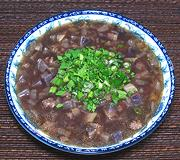

|
Purple "Yam" Soup with PorkVietnam - Canh Khoai Mó | ||||
| Makes: Effort: Sched: DoAhead: |
6 cups ** 1 hr Yes |
A startlingly good soup, flavorful and substantial. This recipe can serve 6 soup courses or a dinner for 3 with rice. It reheats well, but the garnish should be added at serving time - and don't skip the garnish. | |||
|
7 ----- 1 1/3 ----- 1 4 2 3 1 1/2 ----- 3 2 |
oz --- t t --- # oz T c T T --- T |
Pork, Ground -- Marinade Salt Pepper, black --------------- Purple "Yam" (1 Red Onion Oil Water Fish Sauce (2) Magi Seasoning (3) -- Garnish Scallions Parsley |
Prep - (20 min)
|